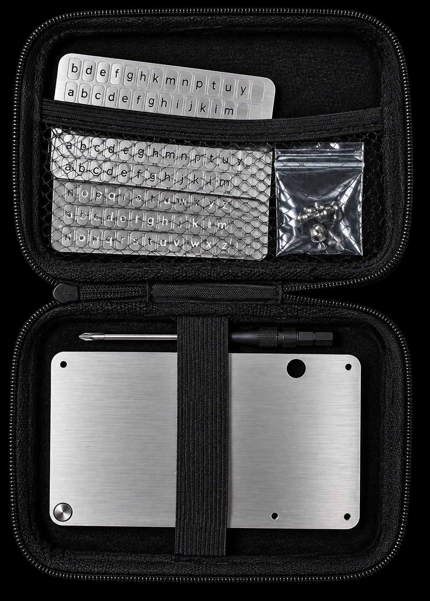

Hersteller und Produktidentifikation
HODLWARE Steel Crypto Seed Phrase Recovery · Modell mit 8 Zeichen pro Wort für 12, 18 oder 24 Seed-Wörter.
Hersteller / verantwortlicher Wirtschaftsakteur in der EU:
Steffen Reizner · HODLWARE
Einzelunternehmen
Breite Str. 4
91166 Georgensgmünd
Deutschland
E-Mail: steffenreizner@web.de
Übermittle deine Seed Phrase oder Private Keys niemals an Dritte oder über Kontaktformulare.
Deine Seed Phrase verdient mehr als Papier.
Deine Seed Phrase ist der Schlüssel zu deinen digitalen Vermögenswerten. Wird ein Zettel durch Feuer, Wasser, Feuchtigkeit oder einfach durch die Zeit zerstört, kann im schlimmsten Fall auch der Zugang zu deinen Assets verloren gehen.
Die HODLWARE Steel Seed Phrase Recovery wurde für eine dauerhafte physische Sicherung deiner Recovery Words entwickelt. Das massive System aus Edelstahl schützt deine Seed Phrase unabhängig von Cloud-Diensten, Apps, Batterien oder anderen elektronischen Geräten.
Einmal eingerichtet, bleibt dein Backup offline, physisch und unter deiner Kontrolle.
Die wichtigsten Vorteile
- 8 Zeichen pro Wort – mehr Platz für deine Recovery Words
- Praktische Aufbewahrungstasche inklusive – Plate, Buchstaben und Zubehör geordnet aufbewahren
- Für 12, 18 und 24 Wörter geeignet
- BIP39-kompatibel – für entsprechende Hardware- und Software-Wallets
- Keine Elektronik – keine Batterie, keine Software und kein Internet erforderlich
- Offline by Design – deine Seed Phrase muss für die Sicherung niemals online eingegeben werden
Was bedeutet 8-Digit?
Die 8-Digit-Variante bietet Platz für bis zu acht Zeichen pro Wort und unterstützt 12, 18 oder 24 Recovery-Wörter. Prüfe die Vorgaben deiner Wallet, bevor du deine Recovery-Phrase überträgst.
Entwickelt für den Ernstfall
Papier ist einfach – aber empfindlich. Wasser, Feuer und Feuchtigkeit können ein handschriftliches Backup dauerhaft unbrauchbar machen.
Die HODLWARE Steel Seed Phrase Recovery setzt deshalb auf eine massive Edelstahlkonstruktion. Deine Recovery Words werden mit Metall-Buchstaben physisch aufbewahrt – unabhängig von elektronischen Geräten.
Kein Cloud-Backup. Kein Account. Kein Akku.
Nur dein physisches Backup an einem Ort, den du bestimmst.
Was ist im Lieferumfang?

1× Steel Seed Phrase Recovery Plate
Metall-Buchstaben/Letter-Sheets für die Seed-Phrase-Eingabe
1× Schraubenzieher
Benötigte Schrauben/Befestigungsteile
1× praktische Aufbewahrungstasche
Void-Sticker
Material: Edelstahl
Seed-Phrases: 12 / 18 / 24 Wörter
Zeichen pro Wort: 8
Standard: BIP39
So funktioniert das Seed Phrase Backup Set
Du überträgst die Wörter deiner bereits eingerichteten Wallet auf die nummerierten Positionen der Metallplatte. Das aktuelle HODLWARE-Modell verwendet einlegbare Metall-Buchstaben und einen Schraubenzieher zum Öffnen und Schließen. Ein Schlagstempel-Set zum Prägen ist nicht enthalten.
Prüfe vor der Übertragung Wortzahl, Schreibweise und Reihenfolge anhand deiner Wallet-Anleitung. Ordne die Buchstaben den passenden Positionen zu und kontrolliere das Ergebnis vor dem Schließen. Beachte die mitgelieferte Produktanleitung. Deine Seed Phrase wird dabei weder an HODLWARE gesendet noch auf unserer Website eingegeben.
Metall als physisches Backup – mit einem sicheren Aufbewahrungsort
Metall ist mechanisch robuster als ein loser Zettel. Die Platte ersetzt jedoch weder den Schutz vor unbefugtem Zugriff noch ein durchdachtes Aufbewahrungskonzept. Wer ein lesbares Backup findet, kann je nach Wallet-Konfiguration Zugriff auf die zugehörigen Vermögenswerte erhalten.
Verwahre das Set geschützt und diskret, möglichst getrennt von deiner Wallet. Die Tasche hält Plate, Buchstaben und Zubehör zusammen; sie ist kein Tresor. Erstelle keine Fotos oder Cloud-Kopien deiner Recovery Phrase.
Wissen für dein Backup
Deine Keys. Dein Backup. Deine Kontrolle.
Eine Seed Phrase sollte nicht davon abhängig sein, ob ein Stück Papier die nächsten zehn oder zwanzig Jahre übersteht.
SECURE WHAT YOU HODL.